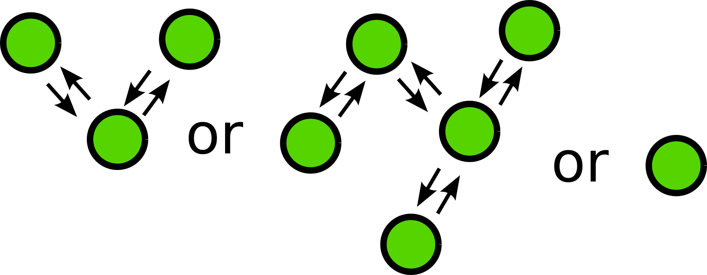
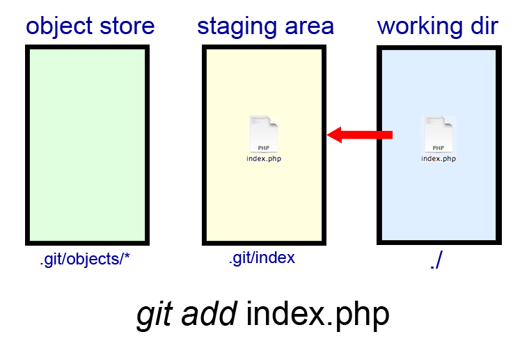
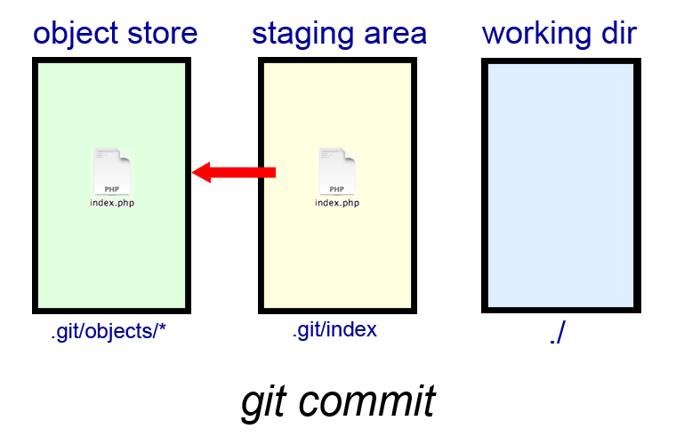
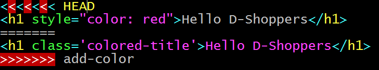

Git Training
$ vim .gitconfig
[user]
name = Skander
email = skander.ben.mahmoud@sap.com
twitter = @Alekkhan
github = github.com/rednaks
linkedin = www.linkedin.com/in/alexandrebm
[core]
editor = vim
cvs = git
[web]
browser = firefox
- The Problem
- Introduction
- Configuration
- The basic commands
- Publishing a project
- Branches
- Conflicts
- Contributing to a git repo
School projects
powred by:
Disadvantages
- Integrating code is difficult
- Simultanous access to a file
- Can cause bugs
- Waste of time
Solutions
One person work on 99% of the code- Using a VCS: git
What is Git ?
- Version Control System
- Created by Linus Torvalds
- Who modified a file ?
- When ?
- Why ?
- What ?
Like SVN ?
Yes
Why Git and not SVN ?
Because ...
It's fast
Benchmarks
Smaller
| Git | SVN | |
|---|---|---|
| Repo Alone | 24M | |
| Entire Directory | 43M | 61M |
It's distributed
It's the "standard"
Android, Apache, Debian, Drupal, Django, Eclipse, Fedora,
Firefox OS(gaia),Gnome, KDE, Linux Kernel, Perl, PHP,
PostgreSQL, Qt, Ruby on Rails, X.org, SAP ...
The basic commands
of Git
A total of 162 commands (v2.10)
Most of them are used internally by high level commands
We may use half of them
Configuration de git
git config --global user.name "Skander BEN MAHMOUD"
git config --global user.email "skander.ben.mahmoud@sap.com"
git config --global color.diff auto
git config --global color.status auto
git config --global color.log auto
git config --global color.branch auto
git config --global http.proxy http://proxy.par.sap.corp:8080
git config --global --get http.proxy
#git config --global --unset http.proxy
Create !
git init
- Initialize a local repository
- .git
- .git/config
git status
An overview on the status of the repository :
- The new files
- The modified files
- The deleted files
- The staged files (ready to commit)
vim index.html
git status
git add

git add index.html
git status
git commit

git commit -m 'First commit'
git status
git diff
vim index.html
# Modify your index.html
git diff
git log
git log
git log -p
Publishing your project
- Self-hosted git server
- Github
- Bitbucket
- Gitlab
git remote
git remote add origin https://github.com/dshop-sophia/git-training.git
git push
git push -u origin master
Cloning
git clone https://github.com/dshop-sophia/git-training.git
cd git-training
git branch

git branch : Create or Create & Switch to branch
git branch
git branch NewFeature
git branch
git checkout -b NewFeature
git branch : Switch to branch
git checkout -b NewFeature2
# or
git branch NewFeature2 && git checkout NewFeature2
git merge
git checkout master
git merge NewFeature
git branch -d NewFeature # delete branch after merging

Conflicts
Conflicts in git
Contributing to a git repo
- Fork
- Write a patch in a new branch
- Open a Pull Request
- Review and Discuss
- Write another patch
Fork

Write a patch
- New branch
- Code
- Test
- Commit
- Push
Open a Pull Request
Discuss and review
what's next ?
- How to unstage a file?
- How to cancel a commit ?
- What about hotfixes ?
- Gitignore